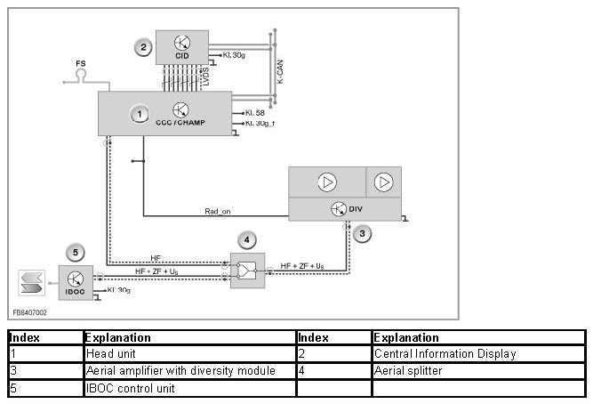
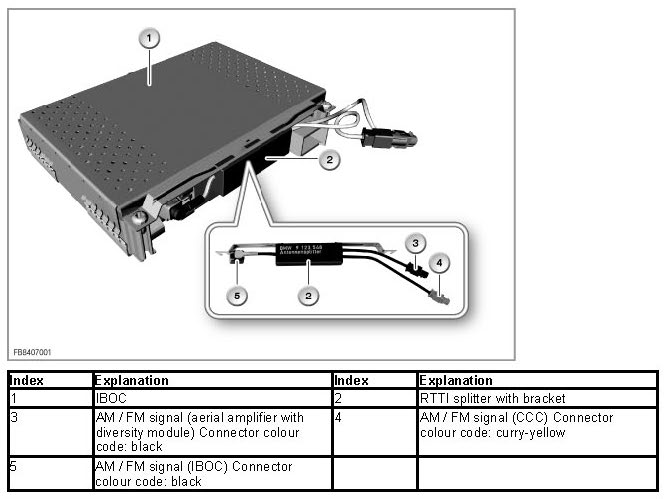

Real Time Traffic Information Splitter
Real Time Traffic Information Splitter
RTTI splitter
In order to guarantee the traffic warning service "Real Time Traffic Information (RTTI)", a passive aerial splitter is fitted at the IBOC control unit. This enables the HF signals to be made available to the IBOC control unit and the CCC. RTTI is only available in conjunction with the Professional navigation system. The CCC provides the received traffic information to the navigation system.

Brief description of components
The following components are described for the RTTI splitter:
- IBOC: In Band On Channel
- CCC: Car Communication Computer

IBOC: In Band On Channel
The IBOC control unit of the High Definition Radio is designed as a hybrid tuner for reception of digital and analog radio stations in the AM and FM frequency ranges. To receive the digital signals, the same signal path is used as for reception of the analog signals. This means that the familiar components 'aerial amplifier with diversity module' and 'AM and FM aerials' can be used.
The IBOC control unit decrypts the digital audio data and sends it across the MOST bus (Media Oriented System Transport bus) to the head unit. The head unit transforms the audio data into analog LF signals. The LF signals are output across the loudspeakers.
CCC: Car Communication Computer
The CCC control unit is designed to receive analog radio stations in the AM and FM frequency range. In combination with IBOC, the function is not implemented in the CCC, rather in the IBOC. The components 'aerial amplifier with diversity module' and 'AM and FM aerials' are used to receive the analog signals.
System function RTTI splitter
The aerial output is divided asymmetrically. The IBOC tuner receives a signal attenuated by 1 dB, the head unit a signal attenuated by 10 dB. The level delivered by the active FM aerial is this divided in a ratio of 9:1 (IBOC:RTTI). The aerial output is divided by the splitter with a ratio of 10:1 (IBOC:RTTI). This division of the aerial output is adequate for the CCC to receive the RTTI Data received. The aerial diversity is controlled by the IBOC control unit.
Notes for Service department
Diagnosis instructions
A test module is available to test the RTTI splitter. This can be reached via the diagnosis fault profile selection (65006_CCC:function fault) or the function selection (Complete vehicle/Body/Audio, Video, Telephone, Navigation (MOST Ring)/Navigation).
No liability can be accepted for printing or other errors. Subject to changes of a technical nature